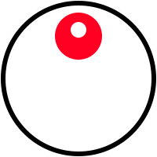

01 — Hero 逐字浮現（載入時就播）
a 3D artist, motion designer, animator and a toast maker! 🥨
這一段是 .stagger-item，會等上面的字跑完才整段淡入。
重點檢查：句尾的 🥨 有沒有被拆壞成亂碼方框 —— 沒有的話表示 emoji 處理正確。
02 — 捲動才觸發的浮現
這行在載入時應該是看不見的，捲到才由下往上逐字浮現。 如果它一開始就看得到、沒有動畫，表示 IntersectionObserver 沒接上。
03 — Wiggle（滑鼠移過去 / 點一下）
也可以用在一般文字上 🥨
每個字會依序往上跳 8px 並轉 -8 度再彈回來，帶一點過衝。 原站只吃 hover，這版加了觸控與鍵盤 focus 也會觸發。
04 — 眼睛追滑鼠（原 eyeroll.js）

在畫面上到處移動滑鼠。瞳孔（紅點）應該一直指向游標， rollspeed 越小跟得越慢。捲動頁面後也要還是對得準 —— 那表示位置重算有生效。
05 — 縮圖網格（10 欄）
桌機 10 欄、平板 5 欄、手機 2 欄。把視窗拉窄看看有沒有正常換。
這是原站 grid-col="x10" 的對應實作。
06 — 字體是否載入
Julius Sans One — ABCDEFG 12345
mundial — ABCDEFG 12345
DM Sans — ABCDEFG 12345
三行字型要各自不同。mundial 那行如果看起來跟系統預設一樣，就是 Adobe Fonts 沒載入 ——
那個 kit（kln0qcj）綁定網域，要到 Adobe Fonts 後台把 localhost
和之後的 github.io 網域加進去。
07 — 減少動態效果
在 Windows 設定搜尋「動畫效果」把它關掉，再重新載入這一頁： 所有動畫都應該停用，而且文字全部直接可見，不能有任何一段是隱形的。